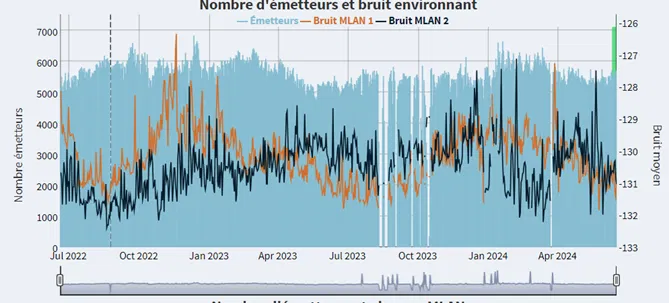
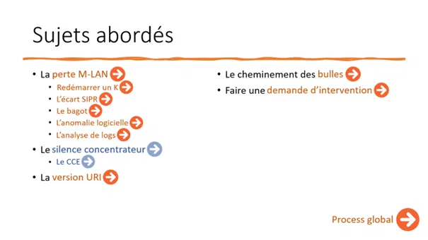
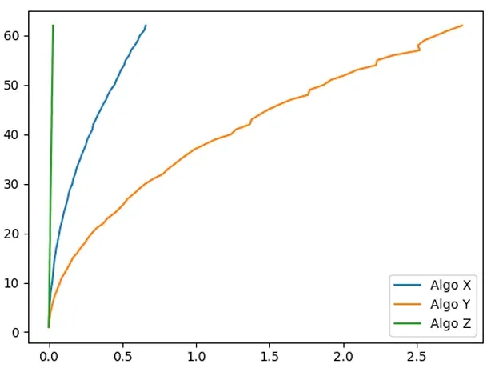
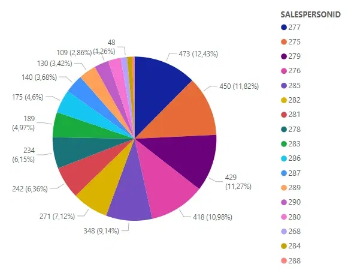
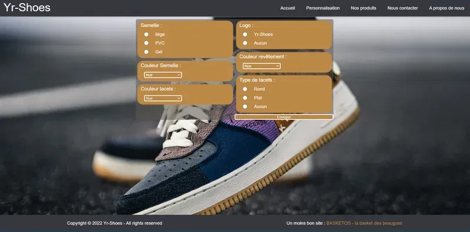
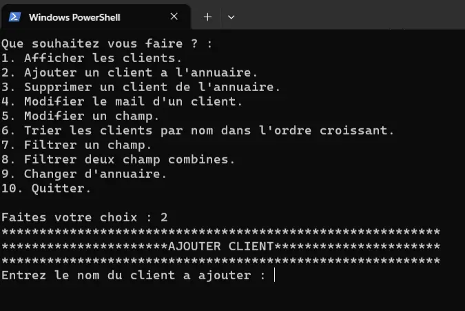
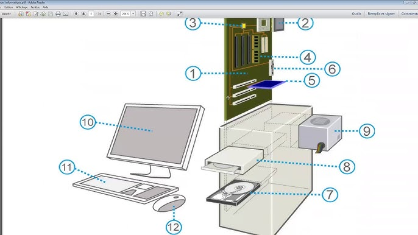

Projets tuteurés
Excel
PowerQuery
Fiabilisation des appels techniciens avant intervention
Automatisation de la vérification des appels pré‑intervention via Excel/PowerQuery. Croisement KSPER, KATI, SIAS. Résultat : suivi clair + amélioration de la conformité.
Compétences IUT ↔ GRDF
- Réaliser — automatiser une solution concrète pour les superviseurs GRDF (PowerQuery + règles métier).
- Optimiser — réduire le temps d’analyse des appels et limiter les erreurs humaines.
- Administrer — exploiter proprement les sources SI (KSPER, KATI, SIAS) et l’environnement bureautique.
- Gérer — croiser, nettoyer et restituer des données utiles au pilotage des interventions.
- Conduire — formaliser le processus, prioriser les cas et planifier les actions correctives.
- Collaborer — partager les tableaux et former les techniciens/équipes régionales.
SOC
Suricata
Wazuh
Mini‑SOC pédagogique
Montage d’un environnement de détection (IDS/IPS Suricata) + SIEM (Wazuh) avec VM Kali pour scénarios d’attaque‑défense.
Compétences IUT ↔ GRDF
- Réaliser — déployer une stack sécu transposable aux pratiques de supervision et d’analyse d’incidents chez GRDF.
- Optimiser — affiner les règles/alertes pour réduire le bruit, comme sur des tableaux de bord métier.
- Administrer — installer/configurer VMs, réseaux et services, à l’image d’un environnement de prod.
- Gérer — centraliser et corréler des logs, utile pour comprendre des pannes d’équipements.
- Conduire — définir des scénarios de tests, jalons et critères d’acceptation.
- Collaborer — travailler en binôme et rédiger des comptes‑rendus compréhensibles par des non‑spécialistes.
DataViz
CookieViz
Exploration de données avec CookieViz
Analyse et visualisation des cookies d’un site pour comprendre les échanges tiers et l’empreinte de suivi.
Compétences IUT ↔ GRDF
- Réaliser — mettre en place une extraction/visualisation réutilisable pour les rapports internes GRDF.
- Optimiser — choisir des indicateurs lisibles pour une décision rapide.
- Administrer — configurer les outils et sources de données comme sur les postes de supervision.
- Gérer — nettoyer, trier et rapprocher des données, à l’image des jeux KSPER/SIAS.
- Conduire — cadrer la démarche d’étude et le périmètre d’analyse.
- Collaborer — restituer les résultats de façon pédagogique aux équipes.

Projets tuteurés
K‑SPER
Détecter de nouveaux problèmes
Améliorer le suivi et la gestion des incidents des concentrateurs via K‑SPER, analyser les défaillances et mettre en place un processus durable pour une maintenance efficace.
Compétences IUT ↔ GRDF
- Réaliser — bâtir des requêtes, rapports et vues utiles aux superviseurs.
- Optimiser — définir des seuils/alertes pour remonter l’essentiel et agir plus vite.
- Administrer — suivre l’état des concentrateurs et des services associés.
- Gérer — historiser les incidents et mesurer l’efficacité des actions.
- Conduire — structurer un plan d’action et un circuit de décision.
- Collaborer — mettre en place une boucle de feedback avec le terrain.

Projets tuteurés
Process
Établir un rapport de process
Fournir un guide pour identifier, classifier et résoudre les incidents, et simplifier ces processus en une procédure globale pour les superviseurs.
Compétences IUT ↔ GRDF
- Réaliser — produire un livrable opérationnel (guide/processus) pour les équipes GRDF.
- Optimiser — supprimer les étapes superflues et clarifier les responsabilités.
- Administrer — standardiser les actions sur les outils du SI (KSPER, SIAS, KATI).
- Gérer — capitaliser les données d’incidents pour mieux piloter.
- Conduire — animer des ateliers et faire valider la démarche.
- Collaborer — co‑construire avec superviseurs et techniciens.

SAE - IUT
Algo
Algorithmes de tri
Analyse et compréhension du fonctionnement de plusieurs algorithmes de tri.
Compétences IUT ↔ GRDF
- Réaliser — écrire du code fiable ; rigueur utile pour les scripts/outils de contrôle.
- Optimiser — raisonner en complexité pour accélérer les contrôles et analyses.
- Administrer — sensibilisation à l’environnement d’exécution et à la reproductibilité.
- Gérer — structurer les données d’entrée/sortie comme pour des logs d’incident.
- Conduire — planifier et comparer des expérimentations.
- Collaborer — revue de code et partage de bonnes pratiques.

SAE - IUT
Power BI
Analyse de données avec Power BI
Création de rapports pour explorer les résultats d’entreprise et croiser des indicateurs métiers.
Compétences IUT ↔ GRDF
- Réaliser — concevoir des rapports comme ceux utilisés pour le suivi GRDF.
- Optimiser — modèles de données et mesures efficaces pour des dashboards réactifs.
- Administrer — gérer connexions et actualisations de sources.
- Gérer — modéliser, nettoyer et interpréter des données.
- Conduire — recueillir le besoin et itérer sur la data‑viz.
- Collaborer — partager et documenter les rapports pour les équipes.

SAE - IUT
Web
Site web vitrine (HTML/CSS)
Recueil des besoins, conception et réalisation d’un site vitrine adapté.
Compétences IUT ↔ GRDF
- Réaliser — transformer un besoin en livrable ; parallèle avec les demandes internes GRDF.
- Optimiser — améliorer lisibilité/UX, utile pour la clarté des rapports.
- Administrer — héberger/configurer un service comme on déploie un outil de supervision.
- Gérer — tracer les demandes et versions.
- Conduire — organiser sprints/livrables.
- Collaborer — itérer avec le « client » comme avec les équipes terrain.

SAE - IUT
C
Gestionnaire d'annuaire client (C)
Programmation d’une application de gestion d’annuaire client en langage C.
Compétences IUT ↔ GRDF
- Réaliser — développer une application robuste comme un petit outil métier.
- Optimiser — utiliser des structures efficaces pour la recherche/tri, analogue aux traitements d’incidents.
- Administrer — gérer fichiers/droits ; sensibilité à l’accès aux données.
- Gérer — opérations CRUD comparables à la gestion d’une base d’incidents.
- Conduire — partir d’un cahier des charges et livrer en étapes.
- Collaborer — tests croisés et documentation.

SAE - IUT
Système
Installation de poste informatique
Choix, installation et configuration du matériel en fonction des besoins.
Compétences IUT ↔ GRDF
- Réaliser — créer une image/scripting d’installation pour un usage récurrent.
- Optimiser — standardiser pour réduire les temps de mise à disposition.
- Administrer — configurer AD/GPO et services, directement utile en supervision.
- Gérer — inventorier et documenter les postes.
- Conduire — checklists, jalons et validation utilisateur.
- Collaborer — coordination avec le futur utilisateur/équipe.
SAE - IUT
Réseaux
Installation de services réseau
Configuration de services d’hébergement (Apache2, Nginx).
Compétences IUT ↔ GRDF
- Réaliser — déployer un service fiable (web), comme pour un outil interne.
- Optimiser — paramétrer pour la robustesse et la disponibilité.
- Administrer — gérer services et réseau ; proche du contexte de supervision radio.
- Gérer — suivre logs/indicateurs pour le pilotage.
- Conduire — dérouler une mise en prod encadrée.
- Collaborer — documenter pour l’équipe d’exploitation.